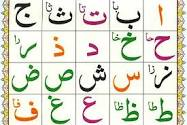

How to learn Noorani Qaida for Beginners
Learn the Pronunciation. The first and the most important
step of
learning Noorani Qaida is learning the pronunciation of words. ... Mix letters together. Once you have learnt how to pronounce words correctly,
you will move forward with the compound syllables. ... Learn vowels
